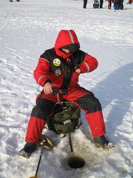

Meškerės žvejybai | Žvejybos reikmenys LT
 Prisijungti Greitas pristatymas 1-2 d.d. Kainos ir kokybės santykis Fizinis prekių atsiėmimas Taikos pr. 149-128 kab., Kaunas (0) Kategorijos Poledinė žūklė Grąžtai Rogės Dėžės Meškerytės Spiningai Avižėlės Balansyrai Blizgutės Sargeliai Vėliavėlės Įrankiai aksesuarai Ritės Valai Palapinės Meškerės Karpinės Meškerės Spiningai Dugninės / Feeder meškerės Šaminės meškerės / Jūrinės meškerės Plūdinės Meškerės Teleskopinės Meškerės Ritės Dugninės / Feeder Ritės Ritės Spiningavimui Karpinės Ritės Plūdinės ritės Multiplikacinės ritės Žieminės ritės Valai Valai Dugninei / Feeder Valai Spiningavimui Karpiniai Valai Šaminiai Valai Valai plūdinei žūklei Valai - pavadėliai Stovai / Laikikliai Stovai Laikikliai Kėdės / Gultai Kėdės žvejybai Gultai žvejybai Jaukai / Masalai Jaukai Boiliai Peletės Skysčiai / Kvapai Priedai Jaukams Signalizatoriai / Kibimo indikatoriai Signalizatoriai Kibimo indikatoriai Spiningavimo masalai Guminiai masalai Vobleriai Blizgės / Vartiklės Sukrės Avižėlės Bemasalinės avižėlės Stintoms Volframinės Švininės Dėklai meškerėms Sistemos Plauko sistemos Sistemos dugninei Method sistemos Šeryklos Graibštai / Sietukai Graibštai Sietukai Skėčiai / Palapinės Skėčiai Palapinės Plūdės Slankiojančios plūdės Paprastos plūdės Plūdės žvejybai gyva žuvele Stoperiai - stabdžiai Apranga / Avalynė Striukės Bridkelnės Pirštinės Botai Kepurės Kostiumai Įrankiai / Aksesuarai Dugninei žūklei Spiningavimui Plūdinei žūklei Karpinei žūklei Poledinei žuklei Dėžės / Krepšiai / Kibirai Dėžės Krepšiai Kibirai Nuolaidos Nuolaida 10 nuolaida 15 Dovanų kuponas GERAIFiltruoti pagal
Išvalyti viskąKategorijos
Kategorijos
Karpinės Meškerės (8) Spiningai (23) Dugninės / Feeder meškerės (32) Šaminės meškerės / Jūrinės meškerės (1) Plūdinės Meškerės (9) Teleskopinės Meškerės (8)Kaina
Kaina
3,00 EUR - 5,00 EUR (1) 9,00 EUR - 10,00 EUR (1) 19,00 EUR - 44,00 EUR (50) 41,00 EUR - 50,00 EUR (3) 52,00 EUR - 70,00 EUR (9) 105,00 EUR - 128,00 EUR (1)Ilgis cm
Ilgis cm
360 (20) 390 (19) 210 cm. (5) 240 cm. (10) 270 cm. (9) 420 cm. (5) 390 cm. (4) 330 (4) 300 cm. (2) 400 (1) 500 (1) 400 cm (2) 500 cm (2) 600 cm (1) 450cm (2)Užmetimo svoris
Užmetimo svoris
5 - 25 g. (1) 2 - 15 g. (1)Perkamiausi
Perkamiausi
Galvakabliai 5-21g 0,38 EUR Pavadėliai spiningui 0,35 EUR Šiaudelis žvejybai 0,20 EUR Šerykla su sparneliais... 1,39 EUR -10% 1,54 EUR Pintas valas MicroTex... 6,03 EUR -25% 8,04 EUR Šerykla kvadratinė... 0,70 EUR Meškerės laikiklis 60-120cm 1,27 EUR -10% 1,41 EUR Laikiklis meškerėms 85 -... 1,61 EUR Visi perkamiausi produktaiNauji produktai
Nauji produktai
Ritė su valu Mifine Rapid
16,50 EUR -25% 22,00 EURRitė FL DA 5000
15,00 EURRitė FL LJ su Baitrunneriu...
19,50 EUR Visi nauji produktai Pagrindinis Meškerės Karpinės Meškerės Spiningai Dugninės / Feeder meškerės Šaminės meškerės / Jūrinės meškerės Plūdinės Meškerės Teleskopinės MeškerėsMeškerės
Struktūra SąrašasRasta 71 prekės(-ių) , žiūrėti žemiau
Rikiuoti pagal: Aktualumas Aktualumas Pavadinimas, A - Z Pavadinimas, Z - A Kaina, mažiausia - didžiausia Kaina, didžiausia - mažiausia Filtras Rodoma 1-12 iš 71 prekės(-ių)Dugninė meškerė Sakana Hantay Ultra Feeder 3.30/3.60/3.90m 60-120g
32,00 EURFL Sakana Hantay Ultra Feeder - ideali dugninė meškerė, skirta žuvų gaudymui tiek stovinčiame vandenyje, tiek tekančiose upėse. Meškerė pagaminta iš aukštos kokybės anglies pluošto. Jos užmetimo svoriai svyruoja nuo 60 iki 120 gramų, kas leidžia toli užmesti tiek lengvas tiek sunkias šeryklas iki jūsų pasirinkto taško...
PeržiūrėtiDugninė meškerė FL HULK Feeder 3.60/3.90m 60-120 g.
36,16 EURFL Hulk Feeder - universali meškerė, kuria galima gaudyti laimikius tiek upėse, tiek stovinčiuose vandens telkiniuose. Dugninė meškerė pagaminta iš aukštos kokybės anglies pluošto, jos užmetimo svoriai svyruoja nuo 60 iki 120 gramų, kas leidžia toli užmesti tiek lengvas tiek sunkias šeryklas iki jūsų jaukinamos vietos...
PeržiūrėtiDugninė meškerė FL Competition Carp Feeder 3.30/3.60/3.90m -130 g.
37,00 EURFL Competition Carp Feeder - universali meškerė, turinti dvejas skirtingas galūnes. Užsidėjus vieną galūnę meškerikotis tampa puikiu karpiniu kotu, o užsidėjus galūnę su keičiamomis viršūnėmis, žvejybos įrankį galima naudoti kaip feeder dugninę meškerę...
PeržiūrėtiDugninė meškerė Matrix 555 3.90m 60 - 120g.
18,15 EUR Matrix 555 Feeder - nebrangi dugninė meškerė, skirta gaudyti visuose vandens telkiniuose. Meškerykočio užmetimas 60-120gramų...
Dugninė meškerė Pokee Black Panther Feeder 3.90m 120 - 180 g.
25,12 EURPokee Black Panther Feeder - dugninė meškerė, skirta gaudyti sunkesniais svoriai. Puikiai tinka žvejoti upėse...
Peržiūrėti -15% Sumažinta kainaDugninė meškerė Rumpol Big Bull Super Feeder 3.60/3.90m 40 - 80g.
24,34 EUR -15% 28,64 EURBig Bull Super Feeder - nebrangus praktiškas lengvo užmetimo feederis, labiau tinkantis gaudyti nedideliais svoriais stovinčiuose vandens telkiniuose, bet taip tinkantis ir nedidelės tekmės upėse...
Peržiūrėti Išpardavimas!Dugninė meškerė Rumpol Carbon Bravo Feeder 3.90m 60 - 160g
26,63 EURRumpol Carbon Bravo Feeder - nebrangi universali dugninė meškerė, pagaminta iš anglies pluošto. Su šia meškere, galima žvejoti tiek ežeruose, tiek upėse...
PeržiūrėtiDugninė meškerė FL Master Feeder MT 3.30/3.60/3.90m iki 100 g.
32,14 EURFL Master Feeder MT - puikus dugninės meškerės pasirinkimas už patrauklią kainą. Meškerė ypač jautri ir lengva, sveria vos 230 gramų. Puikiai tinka gaudyti stovinčiuose vandens telkiniuose bei nedidelės tekmės upėse...
PeržiūrėtiDugninė meškerė FL AQUA Feeder 3.90m iki 200 g.
42,20 EURFL Aqoa Feeder - dugninė meškerė, skirta gaudyti sunkesniais svoriais. Iš aukštos kokybės anglies pluošto pagaminta tvirta meškerė leis lengvai ir tiksliai užmesti svorius net iki 200 gramų. Puikiai tinka žvėjybai upėse...
PeržiūrėtiDugninė meškerė Samurai Feeder 3.60-4.50m iki 150g.
33,16 EURRumpol Samurai Feeder - nebrangi, universali dugnin ė meškerė tinkati žvejybai tiek ežeruose tiek upėse...
PeržiūrėtiRumpol New Hunter Feeder 3.60/3.90m 100-180g
42,19 EURRumpol New Hunter Feeder - puikus, žvejų pamėgtas feederis, skirtas gaudyti įvairaus sunkumo masalais...
PeržiūrėtiKarpinė meškerė Crystal Legend Carp 3.60m 3,5 LBS
28,14 EURCrystal Legend Carp – nebrangi, tvirta meškerė, su plačiais žiedeliais skirta naudoti karpių žūklėje...
Peržiūrėti Rodoma 1-12 iš 71 prekės(-ių) 1 2 3 … 6 TęstiPrenumeruoti naujienlaiškį
Facebook InstagramPrekės
Prekės Sumažinta kaina Naujos prekės | Žvejybos reikmenys kiekvienam - ir mėgėjams, ir profesionalams Perkamiausios prekės | Žvejybos reikmenys kiekvienam - ir mėgėjams, ir profesionalamsMūsų įmonė
Mūsų įmonė Pristatymas Puslapio taisyklės Saugus pirkimas Susisiekite su mumis | Žvejybos reikmenys kiekvienam - ir mėgėjams, ir profesionalams Svetainės žemėlapisParduotuvės informacija
Parduotuvės informacija Taikos pr. 149-116 kab., Kaunas, Lietuva
Paskambinkite mums: 866993888 Parašykite: info@zvejybosreikmenys.ltMB "Žvejybos reikmenys LT", Im. kodas: 305416272
PVM kodas: LT100013238519
Visos teisės saugomos. © 2019-2020 Zvejybosreikmenys.lt. Kopijuoti, dauginti bei platinti egzistuojantį turinį galima tik gavus raštišką zvejybosreikmenys.lt vadovybės sutikimą.